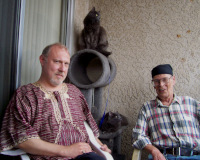

Growing up on the Massachusetts/Rhode Island border line, Peter's undergraduate
work took place for the first two years at the Community College of Rhode Island, pursuing a bachelor's degree in Communications with enough credits for a Music, English, or Philosophy minor. He chose Philosophy and graduated in 1984 while attending the last two years of his undergraduate studies at Rhode Island College.
Of the many authors he's been influenced by, Peter found the works of
Plato, especially The Republic one of the most interesting describing humanity's psychological
development and concepts of justice. Alice A. Bailey, a theosophist, not to be confused with the study of theology, is a favorite influential author of Lancellotti's, along with Helena Petrovna Blavatsky who brought Theosophy, also known as the occult, to America in 1875 with Henry
Steel Olcott.
Growing up on the Massachusetts/Rhode Island border line, Peter's undergraduate
work took place for the first two years at the Community College of Rhode Island, pursuing a bachelor's degree in Communications with enough credits for a Music, English, or Philosophy minor. He chose Philosophy and graduated in 1984 while attending the last two years of his undergraduate studies at Rhode Island College.
Of the many authors he's been influenced by, Peter found the works of
Plato, especially The Republic one of the most interesting describing humanity's psychological
development and concepts of justice. Alice A. Bailey, a theosophist, not to be confused with the study of theology, is a favorite influential author of Lancellotti's, along with Helena Petrovna Blavatsky who brought Theosophy, also known as the occult, to America in 1875 with Henry
Steel Olcott.
Having also studied theology, Peter held to the belief that no one particular religion had all the answers to the inner workings of the universe. As he believed they all had some contribution to “truth.” The author felt labels pigeonholed him and his views when thinking outside the box, especially discussing the nature of God, the supernatural, and how it affected his personal relationship with a higher power.
 Other literature he was influenced by, which impacted his thoughts about the psychological and philosophical nature of humanity include Ralph Waldo Emerson, Edgar Allen Poe, Walt
Whitman, and one of Peter's favorite authors, William Shakespeare. Some of the more modern authors he's read were C.S. Lewis, J.K. Rowling, and Madeleine L’Engle in the realm of fantasy, as well as Isaac Asimov, Frank Herbert, and Arthur C. Clarke as Peter felt these writers created worlds of science fiction that brought him joy. Another author, which fascinated him in the realm of drama and screenplay writing, as well as being one of the first to introduce him to gay thought was the late great Tennessee Williams. He was a gay man certainly out of the closet for the times he lived in, making a thorough examination about mortality in a variety of screenplays, despite his dark view of homosexuality colored by his own upbringing. As for Lancellotti's interest in immortality, Ann Rice examined the possibility of life as a vampire, exciting his macabre side. He’s also read many other vampire novels, including probably one of the most famous, Bram Stoker's “Dracula.”
Other literature he was influenced by, which impacted his thoughts about the psychological and philosophical nature of humanity include Ralph Waldo Emerson, Edgar Allen Poe, Walt
Whitman, and one of Peter's favorite authors, William Shakespeare. Some of the more modern authors he's read were C.S. Lewis, J.K. Rowling, and Madeleine L’Engle in the realm of fantasy, as well as Isaac Asimov, Frank Herbert, and Arthur C. Clarke as Peter felt these writers created worlds of science fiction that brought him joy. Another author, which fascinated him in the realm of drama and screenplay writing, as well as being one of the first to introduce him to gay thought was the late great Tennessee Williams. He was a gay man certainly out of the closet for the times he lived in, making a thorough examination about mortality in a variety of screenplays, despite his dark view of homosexuality colored by his own upbringing. As for Lancellotti's interest in immortality, Ann Rice examined the possibility of life as a vampire, exciting his macabre side. He’s also read many other vampire novels, including probably one of the most famous, Bram Stoker's “Dracula.”
 During his daily working life, after many years of experience in a variety of fields
starting as an account executive at an ad agency, he eventually became an expert in sales and marketing. Beginning with an infomercial company, and then managing a sales team at an internet advertising start-up, he acquired over 20 years of experience in telecommunications and Cable TV. In 2008 when the U.S. market crashed, Peter decided to reinvent himself. After discussing his next career move with friends and his husband, he reminisced over a part-time job he had as the Recreational Director at the Institute of Mental Health in Cranston, Rhode Island. He worked with older adults, doing sing-alongs to piano and guitar. Lancellotti, a classically trained guitarist from the age of eight, was a studio musician. In addition to working on his craft, he realized he enjoyed working with older adults.
During his daily working life, after many years of experience in a variety of fields
starting as an account executive at an ad agency, he eventually became an expert in sales and marketing. Beginning with an infomercial company, and then managing a sales team at an internet advertising start-up, he acquired over 20 years of experience in telecommunications and Cable TV. In 2008 when the U.S. market crashed, Peter decided to reinvent himself. After discussing his next career move with friends and his husband, he reminisced over a part-time job he had as the Recreational Director at the Institute of Mental Health in Cranston, Rhode Island. He worked with older adults, doing sing-alongs to piano and guitar. Lancellotti, a classically trained guitarist from the age of eight, was a studio musician. In addition to working on his craft, he realized he enjoyed working with older adults.

He was always attracted to older people in his life, surrounded himself with those
smarter than he was because of his innate thirst for knowledge. His original plan was to make a simple transition from sales and marketing in Cable TV to telehealth. At the University of Southern California during his graduate work in gerontology, which is the study of aging with an emphasis on older adults, Peter worked in scientific research for over four years. He recruited older adults into a longitudinal study experimenting on the hypothesis of whether Alzheimer's was detectable with our current instrumentation. Peter was not only responsible for recruitment, but also administering cognitive testing. He was in demand by other professors because he never did anything half-heartedly and was recruited into four other studies, which he followed through to completion.
 After over four years as a research assistant, he decided he could help older
adults in a better capacity by opening his own homecare agency in Los Angeles County. He served the LGBTQ (Lesbian, Gay, Bisexual, Transgender, and Questioning) older adult demographic, which surprisingly had never been done successfully.
Here is when his career came to a screeching halt after developing comorbidities of his own at the end of 2016. Covid19 hit the planet in March 2020. Being declared permanently disabled, this would be the beginning of Peter’s next chapter in life—writing.
After over four years as a research assistant, he decided he could help older
adults in a better capacity by opening his own homecare agency in Los Angeles County. He served the LGBTQ (Lesbian, Gay, Bisexual, Transgender, and Questioning) older adult demographic, which surprisingly had never been done successfully.
Here is when his career came to a screeching halt after developing comorbidities of his own at the end of 2016. Covid19 hit the planet in March 2020. Being declared permanently disabled, this would be the beginning of Peter’s next chapter in life—writing.